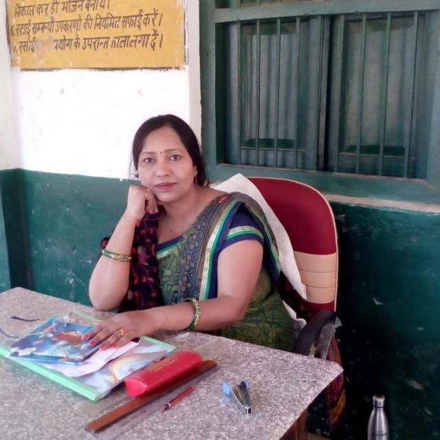

|  | NIRMALA DEVI |
| Head at Harunagala Primary School.👩🏻‍💼 |
Born in small village of Mainpuri(jyonti) on 4th May 1976.
She is a daughter of Phulwari Lal and Khajani Devi😂.
She got married to Mukesh Diwakar on 12th Feburary 1992.
Her degrees are:
Her hobbies are:
She is the richest member of her family.But her annual income is still a mystery.
She owns actually the whole house and each and every thing of it.
Her vehicle is Activa 110.